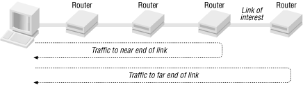

Once you have a picture of the path
your traffic is taking, the next step in testing is to get some basic
performance numbers. Evaluating path performance will mean doing
three types of measurements. Bandwidth measurements will give you an
idea of the hardware capabilities of your network, such as the
maximum capacity of your network. Throughput measurements will help
you discover what capacity your network provides in practice, i.e.,
how much of the maximum is actually available. Traffic measurements
will give you an idea of how the capacity is being used.
My goal in this section is not a definitive analysis of performance.
Rather, I describe ways to collect some general numbers that can be
used to see if you have a reasonable level of performance or if you
need to delve deeper. If you want to go beyond the quick-and-dirty
approaches described here, you might consider some of the more
advanced tools described in
. The tools
mentioned here should help you focus your efforts.
4.2.1. Performance Measurements
Several
terms are used, sometimes inconsistently, to describe the capacity or
performance of a link. Without getting too formal, let's review
some of these terms to avoid potential confusion.
Two
factors determine how long it takes to send a packet or frame across
a single link. The amount of time it takes to put the signal onto the
cable is known as the
transmission time or
transmission delay. This will depend on the
transmission rate (or interface speed) and the
size of the frame. The amount of time it takes for the signal to
travel across the cable is known as the
propagation
time or
propagation delay.
Propagation time is determined by the type of media used and the
distance involved. It often comes as a surprise that a signal
transmitted at 100 Mbps will have the same propagation delay as a
signal transmitted at 10 Mbps. The first signal is being transmitted
10 times as fast, but, once it is on a cable, it doesn't
propagate any faster. That is, the difference between 10 Mbps and 100
Mbps is not the speed the bits travel, but the length of the bits.
Once
we move to multihop paths, a third consideration enters the
picture -- the delay introduced from processing packets at
intermediate devices such as routers and switches. This is usually
called the
queuing delay
since, for the most part, it arises from the time packets spend in
queues within the device. The total delay in delivering a packet is
the sum of these three delays. Transmission and propagation delays
are usually quite predictable and stable. Queuing delays, however,
can introduce considerable variability.
The
term
bandwidth is typically used to describe the
capacity of a link. For our purposes, this is the transmission rate
for the link.
[17] If we can transmit onto a link at 10 Mbps, then we say we
have a bandwidth of 10 Mbps.
Throughput
is a measure of the amount of data that can be sent over a link in a
given amount of time. Throughput estimates, typically obtained
through measurements based on the bulk transfer of data, are usually
expressed in bits per second or packets per second. Throughput is
frequently used as an estimate of the bandwidth of a network, but
bandwidth and throughput are really two different things. Throughput
measurement may be affected by considerable overhead that is not
included in bandwidth measurements. Consequently, throughput is a
more realistic estimator of the actual performance you will see.
Throughput is generally an end-to-end
measurement. When dealing with multihop paths, however, the
bandwidths may vary from link to link. The
bottleneck
bandwidth is the bandwidth of the slowest link on a path,
i.e., the link with the lowest bandwidth. (While introduced here,
bottleneck analysis is discussed in greater detail in
Chapter 12, "Troubleshooting Strategies".)
Additional metrics will sometimes be
needed. The best choice is usually task dependent. If you are sending
real-time audio packets over a long link, you may want to minimize
both delay and variability in the delay. If you are using FTP to do
bulk transfers, you may be more concerned with the throughput. If you
are evaluating the quality of your link to the Internet, you may want
to look at bottleneck bandwidth for the path. The development of
reliable metrics is an active area of research.
4.2.2. Bandwidth Measurements
We will begin by looking at ways
to estimate bandwidth. Bandwidth really measures the capabilities of
our hardware. If bandwidth is not adequate, you will need to
reexamine your equipment.
4.2.2.1. ping revisited
The
preceding discussion should make clear that the times returned by
ping, although frequently described as
propagation delays, really are the sum of the transmission,
propagation, and queuing delays. In the last chapter, we used
ping to calculate a rough estimate of the
bandwidth of a connection and noted that this treatment is limited
since it gives a composite number.
We can refine this process and use it to estimate the bandwidth for a
link along a path. The basic idea is to first calculate the path
behavior up to the device on the closest end of the link and then
calculate the path behavior to the device at the far end of the link.
The difference is then used to estimate the bandwidth for the link in
question.
Figure 4-4 shows the basic arrangement.

Figure 4-4. Link traffic measurements
This
process requires using
ping four times. First,
ping the near end of a link with two different packet sizes. The
difference in the times will eliminate the propagation and queuing
delays along the path (assuming they haven't changed too much)
leaving the time required to transmit the additional data in the
larger packet. Next, use the same two packet sizes to ping the far
end of the link. The difference in the times will again eliminate the
overhead. Finally, the difference in these two differences will be
the amount of time to send the additional data over the last link in
the path. This is the round-trip time. Divide this number by two and
you have the time required to send the additional data in one
direction over the link. The bandwidth is simply the amount of
additional data sent divided by this last calculated time.
[18]
Table 4-1 shows the raw data for the second and
third hops along the path shown in
Figure 4-1.
Packets sizes are 100 and 1100 bytes.
Table 4-1. Raw data
|
IP address
|
Time for 100 bytes
|
Time for 1100 bytes
|
|
205.153.61.1
|
1.380 ms
|
5.805 ms
|
|
205.153.60.2
|
4.985 ms
|
12.823 ms
|
|
165.166.36.17
|
8.621 ms
|
26.713 ms
|
Table 4-2 shows the calculated results. The time
difference was divided by two (RRT correction), then divided into
8000 bits (the size of the data in bits), and then multiplied by 1000
(milliseconds-to-seconds correction.). The results, in bps, were then
converted to Mbps. If several sets of packets are sent, the minimums
of the times can be used to improve the estimate.
Table 4-2. Calculated bandwidth
|
Near link
|
Far link
|
Time difference
|
Estimated bandwidth
|
|
205.153.61.1
|
205.153.60.2
|
3.413 ms
|
4.69 Mbps
|
|
205.153.60.2
|
165.166.36.17
|
10.254 ms
|
1.56 Mbps
|
Clearly, doing this manually is confusing, tedious, and prone to
errors. Fortunately, several tools based on this approach greatly
simplify the process. These tools also improve accuracy by using
multiple packets.
4.2.2.2. pathchar
One tool that automates this process is
pathchar. This tool, written by Van Jacobson
several years ago, seems to be in a state of limbo. It has, for
several years, been available as an alpha release, but nothing seems
to have been released since. Several sets of notes or draft notes are
available on the Web, but there appears to be no manpage for the
program. Nonetheless, the program remains available and has been
ported to several platforms. Fortunately, a couple of alternative
implementations of the program have recently become available. These
include
bing,
pchar,
clink, and
tmetric.
One strength of
pathchar and its variants is
that they can discover the bandwidth of each link along a path using
software at only one end of the path. The method used is basically
that described earlier for
ping, but
pathchar uses a large number of packets of
various sizes. Here is an example of running
pathchar
:
bsd1# pathchar 165.166.0.2
pathchar to 165.166.0.2 (165.166.0.2)
mtu limited to 1500 bytes at local host
doing 32 probes at each of 45 sizes (64 to 1500 by 32)
0 205.153.60.247 (205.153.60.247)
| 4.3 Mb/s, 1.55 ms (5.88 ms)
1 cisco (205.153.60.2)
| 1.5 Mb/s, -144 us (13.5 ms)
2 165.166.36.17 (165.166.36.17)
| 10 Mb/s, 242 us (15.2 ms)
3 e0.r01.ia-gnwd.Infoave.Net (165.166.36.33)
| 1.2 Mb/s, 3.86 ms (32.7 ms)
4 165.166.125.165 (165.166.125.165)
| ?? b/s, 2.56 ms (37.7 ms)
5 165.166.125.106 (165.166.125.106)
| 45 Mb/s, 1.85 ms (41.6 ms), +q 3.20 ms (18.1 KB) *4
6 atm1-0-5.r01.ncchrl.infoave.net (165.166.126.1)
| 17 Mb/s, 0.94 ms (44.3 ms), +q 5.83 ms (12.1 KB) *2
7 h10-1-0.r01.ia-chrl.infoave.net (165.166.125.33)
| ?? b/s, 89 us (44.3 ms), 1% dropped
8 dns1.InfoAve.Net (165.166.0.2)
8 hops, rtt 21.9 ms (44.3 ms), bottleneck 1.2 Mb/s, pipe 10372 bytes
As
pathchar runs, it first displays a message
describing how the probing will be done. From the third line of
output, we see that
pathchar is using 45
different packet sizes ranging from 64 to 1500 bytes. (1500 is the
local host's MTU.) It uses 32 different sets of these packets
for each hop. Thus, this eight-hop run generated 11,520 test packets
plus an equal number of replies.
The
bandwidth and delay for each link is given.
pathchar may also include information on the
queuing delay (links 5 and 6 in this example). As you can see,
pathchar is not always successful in estimating
the bandwidth (see the links numbered 4 and 7) or the delay (see link
numbered 1). With this information, we could go back to
Figure 4-1 and fill in link speeds for most links.
As
pathchar runs, it shows a countdown as it
sends out each packet. It will display a line that looks something
like this:
1: 31 288 0 3
The
1: refers to
the hop count and will be incremented for each successive hop on the
path. The next number counts down, giving the number of sets of
probes remaining to be run for this link. The third number is the
size of the current packet being sent. Both the second and third
numbers should be changing rapidly. The last two numbers give the
number of packets that have been dropped so far on this link and the
average round-trip time for this link.
When the probes for a hop are complete, this line is replaced with a
line giving the bandwidth, incremental propagation delay, and
round-trip time.
pathchar uses the minimum of
the observed delays to improve its estimate of bandwidth.
Several options are available with
pathchar. Of greatest interest are those that
control the number and size of the probe packet used. The option
-q allows the user to specify the number of sets
of packets to send. The options
-m and
-M control the minimum and maximum packet sizes,
respectively. The option
-Q controls the step
size from the smallest to largest packet sizes. As a general rule of
thumb, more packets are required for greater accuracy, particularly
on busy links. The option
-n turns off DNS
resolution, and the option
-v provides for more
output.
pathchar is not without problems.
One problem for
pathchar is hidden or unknown
transmission points. The first link reports a bandwidth of 4.3 Mbps.
From
traceroute, we only know of the host and
the router at the end of the link. This is actually a path across a
switched LAN with three segments and two additional transmission
points at the switches. The packet is transmitted onto a 10-Mbps
network, then onto a 100-Mbps backbone, and then back onto a 10 Mbps
network before reaching the first router. Consequently, there are
three sets of transmission delays rather than just one, and a smaller
than expected bandwidth is reported.
You
will see this problem with store-and-forward switches, but it is not
appreciable with cut-through switches. (
the sidebar "Types of Switches" if you are
unfamiliar with the difference between cut-through and
store-and-forward switches.) In a test in which another switch,
configured for cut-through, was added to this network, almost no
change was seen in the estimated bandwidth with
pathchar. When the switch was reconfigured as a
store-and-forward switch, the reported bandwidth on the first link
dropped to 3.0 Mbps.
Types of Switches
Devices may minimize queuing delays by
forwarding frames as soon as possible. In some cases, a device may
begin retransmitting a frame before it has finished receiving that
frame. With Ethernet frames, for example, the destination address is
the first field in the header. Once this has been read, the out
interface is known and transmission can begin even though much of the
original frame is still being received. Devices that use this scheme
are called cut-through devices.
The alternative is to wait until the entire frame has arrived before
retransmitting it. Switches that use this approach are known as
store-and-forward devices.
Cut-through devices have faster throughput than store-and-forward
switches because they begin retransmitting sooner. Unfortunately,
cut-through devices may forward damaged frames, frames that a
store-and-forward switch would have discarded. The problem is that
the damage may not be discovered by the cut-through device until
after retransmission has already begun. Store-and-forward devices
introduce longer delays but are less likely to transmit damaged
frames since they can examine the entire frame before retransmitting
it. Store-and-forward technology is also required if interfaces
operate at different speeds. Often devices can be configured to
operate in either mode.
|
This creates a problem if you are evaluating an ISP. For example, it
might appear that the fourth link is too slow if the contract
specifies T1 service. This might be the case, but it could just be a
case of a hidden transmission point. Without more information, this
isn't clear.
Finally, you should be extremely
circumspect about running
pathchar. It can
generate a huge amount of traffic. The preceding run took about 40
minutes to complete. It was run from a host on a university campus
while the campus was closed for Christmas break and largely deserted.
If you are crossing a slow link and have a high path MTU, the amount
of traffic can effectively swamp the link. Asymmetric routes, routes
in which the path to a device is different from the path back,
changing routes, links using tunneling, or links with additional
padding added can all cause problems.
4.2.2.3. bing
One
alternative to
pathchar is
bing, a program written by Pierre Beyssac. Where
pathchar gives the bandwidth for every link
along a path,
bing is designed to measure
point-to-point bandwidth. Typically, you would run
traceroute first if you don't already know
the links along a path. Then you would run
bing
specifying the near and far ends of the link of interest on the
command line. This example measures the bandwidth of the third hop in
Figure 4-1:
bsd1# bing -e10 -c1 205.153.60.2 165.166.36.17
BING 205.153.60.2 (205.153.60.2) and 165.166.36.17 (165.166.36.17)
44 and 108 data bytes
1024 bits in 0.835ms: 1226347bps, 0.000815ms per bit
1024 bits in 0.671ms: 1526080bps, 0.000655ms per bit
1024 bits in 0.664ms: 1542169bps, 0.000648ms per bit
1024 bits in 0.658ms: 1556231bps, 0.000643ms per bit
1024 bits in 0.627ms: 1633174bps, 0.000612ms per bit
1024 bits in 0.682ms: 1501466bps, 0.000666ms per bit
1024 bits in 0.685ms: 1494891bps, 0.000669ms per bit
1024 bits in 0.605ms: 1692562bps, 0.000591ms per bit
1024 bits in 0.618ms: 1656958bps, 0.000604ms per bit
--- 205.153.60.2 statistics ---
bytes out in dup loss rtt (ms): min avg max
44 10 10 0% 3.385 3.421 3.551
108 10 10 0% 3.638 3.684 3.762
--- 165.166.36.17 statistics ---
bytes out in dup loss rtt (ms): min avg max
44 10 10 0% 3.926 3.986 4.050
108 10 10 0% 4.797 4.918 4.986
--- estimated link characteristics ---
estimated throughput 1656958bps
minimum delay per packet 0.116ms (192 bits)
average statistics (experimental) :
packet loss: small 0%, big 0%, total 0%
average throughput 1528358bps
average delay per packet 0.140ms (232 bits)
weighted average throughput 1528358bps
resetting after 10 samples.
The
output begins with the addresses and packet sizes followed by lines
for each pair of probes. Next,
bing returns
round-trip times and packet loss data. Finally, it returns several
estimates of throughput.
[19]
In this particular example, we have specified the options
-e10 and
-c1, which limit
the probe to one cycle using 10 pairs of packets. Alternatively, you
can omit these options and watch the output. When the process seems
to have stabilized, enter a Ctrl-C to terminate the program. The
summary results will then be printed. Interpretation of these results
should be self-explanatory.
bing
allows for a number of fairly standard options. These options allow
controlling the number of packet sizes, suppressing name resolution,
controlling routing, and obtaining verbose output. See the manpage if
you have need of these options.
Because
bing uses
the same mechanism as
pathchar, it will suffer
the same problems with hidden transmission points. Thus, you should
be circumspect when using it if you don't fully understand the
topology of the network. While
bing does not
generate nearly as much traffic as
pathchar, it
can still place strains on a network.
4.2.2.4. Packet pair software
One alternative approach that is
useful for measuring bottleneck bandwidth is the
packet
pair or
packet stretch approach. With
this approach, two packets that are the same size are transmitted
back-to-back. As they cross the network, whenever they come to a
slower link, the second packet will have to wait while the first is
being transmitted. This increases the time between the transmission
of the packets at this point on the network. If the packets go onto
another faster link, the separation is preserved. If the packets
subsequently go onto a slower link, then the separation will
increase. When the packets arrive at their destination, the bandwidth
of the slowest link can be calculated from the amount of separation
and the size of the packets.
It would appear that getting this method to work requires software at
both ends of the link. In fact, some implementations of packet pair
software work this way. However, using software at both ends is not
absolutely necessary since the acknowledgment packets provided with
some protocols should preserve the separation.
One assumption of this algorithm is that packets will stay together
as they move through the network. If other packets are queued between
the two packets, the separation will increase. To avoid this problem,
a number of packet pairs are sent through the network with the
assumption that at least one pair will stay together. This will be
the pair with the minimum separation.
Several implementations of this algorithm
exist.
bprobe and
cprobe
are two examples. At the time this was written, these were available
only for the IRIX operating system on SGI computers. Since the source
code is available, this may have changed by the time you read this.
Compared to the
pathchar approach, the packet
pair approach will find only the bottleneck bandwidth rather than the
bandwidth of an arbitrary link. However, it does not suffer from the
hidden hop problem. Nor does it create the levels of traffic
characteristic of
pathchar. This is a technology
to watch.
4.2.3. Throughput Measurements
Estimating
bandwidth can provide a quick overview of hardware performance. But
if your bandwidth is not adequate, you are limited in what you can
actually do -- install faster hardware or contract for faster
service. In practice, it is often not the raw bandwidth of the
network but the bandwidth that is actually available that is of
interest. That is, you may be more interested in the throughput that
you can actually achieve.
Poor throughput can result
not only from inadequate hardware but also from architectural issues
such as network design. For example, a broadcast domain that is too
large will create problems despite otherwise adequate hardware. The
solution is to redesign your network, breaking apart or segmenting
such domains
once you have a clear understanding of traffic
patterns.
Equipment configuration errors may also
cause poor performance. For example, some Ethernet devices may
support full duplex communication if correctly configured but will
fall back to half duplex otherwise. The first step toward a solution
is recognizing the misconfiguration. Throughput tests are the next
logical step in examining your network.
Throughput is typically measured by
timing the transfer of a large block of data. This may be called the
bulk transfer capacity of the link. There are a
number of programs in this class besides those described here. The
approach typically requires software at each end of the link. Because
the software usually works at the application level, it tests not
only the network but also your hardware and software at the
endpoints.
Since performance depends on several parts, when you identify that a
problem exists, you won't immediately know where the problem
is. Initially, you might try switching to a different set of machines
with different implementations to localize the problem. Before you
get too caught up in your testing, you'll want to look at the
makeup of the actual traffic as described later in this chapter. In
extreme cases, you may need some of the more advanced tools described
later in this book.
One simple quick-and-dirty test is to
use an application like FTP. Transfer a file with FTP and see what
numbers it reports. You'll need to convert these to a bit rate,
but that is straightforward. For example, here is the final line for
a file transfer:
1294522 bytes received in 1.44 secs (8.8e+02 Kbytes/sec)
Convert 1,294,522 bytes to bits by multiplying by 8 and then dividing
by the time, 1.44 seconds. This gives about 7,191,789 bps.
One problem with this approach is that the disk accesses required may
skew your results. There are a few tricks you can use to reduce this,
but if you need the added accuracy, you are better off using a tool
that is designed to deal with such a problem.
ttcp, for example, overcomes the disk access
problem by repeatedly sending the same data from memory so that there
is no disk overhead.
4.2.3.1. ttcp
One of the oldest bulk capacity
measurement tools is
ttcp. This was written by
Mike Muuss and Terry Slattery. To run the program, you first need to
start the server on the remote machine using, typically, the
-r and
-s options. Then the
client is started with the options
-t and
-s and the hostname or address of the server.
Data is sent from the client to the server, performance is measured,
the results are reported at each end, and then both client and server
terminate. For example, the server might look something like this:
bsd2# ttcp -r -s
ttcp-r: buflen=8192, nbuf=2048, align=16384/0, port=5001 tcp
ttcp-r: socket
ttcp-r: accept from 205.153.60.247
ttcp-r: 16777216 bytes in 18.35 real seconds = 892.71 KB/sec +++
ttcp-r: 11483 I/O calls, msec/call = 1.64, calls/sec = 625.67
ttcp-r: 0.0user 0.9sys 0:18real 5% 15i+291d 176maxrss 0+2pf 11478+28csw
The client side would look like this:
bsd1# ttcp -t -s 205.153.63.239
ttcp-t: buflen=8192, nbuf=2048, align=16384/0, port=5001 tcp -> 205.153.63.239
ttcp-t: socket
ttcp-t: connect
ttcp-t: 16777216 bytes in 18.34 real seconds = 893.26 KB/sec +++
ttcp-t: 2048 I/O calls, msec/call = 9.17, calls/sec = 111.66
ttcp-t: 0.0user 0.5sys 0:18real 2% 16i+305d 176maxrss 0+2pf 3397+7csw
The program reports the amount of
information transferred, indicates that the connection is being made,
and then gives the results, including raw data, throughput, I/O call
information, and execution times. The number of greatest interest is
the transfer rate, 892.71 KB/sec (or 893.26 KB/sec). This is about
7.3 Mbps, which is reasonable for a 10-Mbps Ethernet connection. (But
it is not very different from our quick-and-dirty estimate with FTP.)
These
numbers reflect the rate at which data is transferred, not the raw
capacity of the line. Relating these numbers to bandwidth is
problematic since more bits are actually being transferred than these
numbers would indicate. The program reports sending 16,777,216 bytes
in 18.35 seconds, but this is just the data. On Ethernet with an MTU
of 1500, each buffer will be broken into 6 frames. The first will
carry an IP and TCP header for 40 more bytes. Each of the other 5
will have an IP header for 20 more bytes each. And each will be
packaged as an Ethernet frame costing an additional 18 bytes each.
And don't forget the Ethernet preamble. All this additional
overhead should be included in a calculation of raw capacity.
Poor throughput numbers typically indicate
congestion but that may not always be the case. Throughput will also
depend on configuration issues such as the TCP window size for your
connection. If your window size is not adequate, it will drastically
affect performance. Unfortunately, this problem is not uncommon for
older systems on today's high-speed links.
The
-u option allows you to check UDP throughput. A
number of options give you some control over the amount and the
makeup of the information transferred. If you omit the
-s option, the program uses standard input and
output. This option allows you to control the data being
sent.
[20]
The nice thing about
ttcp is that a number of implementations are
readily available. For example, it is included as an undocumented
command in the Enterprise version of Cisco IOS 11.2 and later. At one
time, a Java version of
ttcp was freely
available from Chesapeake Computer Consultants, Inc., (now part of
Mentor Technologies, Inc.). This program would run on anything with a
Java interpreter including Windows machines. The Java version
supported both a Windows and a command-line interface. Unfortunately,
this version does not seem to be available anymore, but you might
want to try tracking down a copy.
4.2.3.2. netperf
Another program to consider is
netperf, which had its origin in the Information
Networks Division of Hewlett-Packard. While not formally supported,
the program does appear to have informal support. It is freely
available, runs on a number of Unix platforms, and has reasonable
documentation. It has also been ported to Windows. While not as
ubiquitous as
ttcp, it supports a much wider
range of tests.
Unlike with
ttcp,
the client and server are two separate programs. The server is
netserver and can be started independently or
via
inetd. The client is known as
netperf. In the following example, the server
and client are started on the same machine:
bsd1# netserver
Starting netserver at port 12865
bsd1# netperf
TCP STREAM TEST to localhost : histogram
Recv Send Send
Socket Socket Message Elapsed
Size Size Size Time Throughput
bytes bytes bytes secs. 10^6bits/sec
16384 16384 16384 10.00 326.10
This tests the loop-back interface, which reports a throughput of 326
Mbps.
In the next example
, netserver is started on one
host:
bsd1# netserver
Starting netserver at port 12865
Then
netperf is run with the
-H option to specify the address of the server:
bsd2# netperf -H 205.153.60.247
TCP STREAM TEST to 205.153.60.247 : histogram
Recv Send Send
Socket Socket Message Elapsed
Size Size Size Time Throughput
bytes bytes bytes secs. 10^6bits/sec
16384 16384 16384 10.01 6.86
This is roughly the same throughput we saw with
ttcp.
netperf performs a
number of additional tests. In the next test, the transaction rate of
a connection is measured:
bsd2# netperf -H 205.153.60.247 -tTCP_RR
TCP REQUEST/RESPONSE TEST to 205.153.60.247 : histogram
Local /Remote
Socket Size Request Resp. Elapsed Trans.
Send Recv Size Size Time Rate
bytes Bytes bytes bytes secs. per sec
16384 16384 1 1 10.00 655.84
16384 16384
The program contains several scripts for testing. It is also possible
to do various stream tests with
netperf. See the
document that accompanies the program if you have these needs.
4.2.3.3. iperf
If
ttcp and
netperf don't meet your needs, you might
consider
iperf.
iperf comes
from the National Laboratory for Applied Network Research (NLANR) and
is a very versatile tool. While beyond the scope of this chapter,
iperf can also be used to test UDP bandwidth,
loss, and jitter. A Java frontend is included to make
iperf easier to use. This utility has also been
ported to Windows.
Here is an example of running the server side of
iperf on a FreeBSD system:
bsd2# iperf -s -p3000
------------------------------------------------------------
Server listening on TCP port 3000
TCP window size: 16.0 KByte (default)
------------------------------------------------------------
[ 4] local 172.16.2.236 port 3000 connected with 205.153.63.30 port 1133
[ ID] Interval Transfer Bandwidth
[ 4] 0.0-10.0 sec 5.6 MBytes 4.5 Mbits/sec
^C
Here is the client side under Windows:
C:\>iperf -c205.153.60.236
-p3000
------------------------------------------------------------
Client connecting to 205.153.60.236, TCP port 3000
TCP window size: 8.0 KByte (default)
------------------------------------------------------------
[ 28] local 205.153.63.30 port 1133 connected with 205.153.60.236 port 3000
[ ID] Interval Transfer Bandwidth
[ 28] 0.0-10.0 sec 5.6 MBytes 4.5 Mbits/sec
Notice the use of Ctrl-C to terminate the server side. In TCP mode,
iperf is compatible with
ttcp so it can be used as the client or server.
iperf is a particularly convenient tool for
investigating whether your TCP window is adequate. The
-w option sets the socket buffer size. For TCP,
this is the window size. Using the
-w option,
you can step through various window sizes and see how they impact
throughput.
iperf has a number of other
strengths that make it worth considering.
4.2.3.4. Other related tools
You may also want to consider several
similar or related tools.
treno uses a
traceroute-like approach to calculate bulk
capacity, path MTU, and minimum RTP. Here is an example:
bsd2# treno 205.153.63.30
MTU=8166 MTU=4352 MTU=2002 MTU=1492 ..........
Replies were from sloan.lander.edu [205.153.63.30]
Average rate: 3868.14 kbp/s (3380 pkts in + 42 lost = 1.2%) in 10.07 s
Equilibrium rate: 0 kbp/s (0 pkts in + 0 lost = 0%) in 0 s
Path properties: min RTT was 13.58 ms, path MTU was 1440 bytes
XXX Calibration checks are still under construction, use -v
treno is part of a larger Internet traffic
measurement project at NLANR.
treno servers are
scattered across the Internet.
In general,
netperf,
iperf,
and
treno offer a wider range of features, but
ttcp is generally easier to find
.
Evaluating Internet Service Providers
When you sign a contract with an ISP
to provide a level of service, say T1 access, what does this mean?
The answer is not obvious.
ISPs sell services based, in some sense, on the total combined
expected usage of all users. That is, they sell more capacity than
they actually have, expecting levels of usage by different customers
to balance out. If everyone tries to use their connection at once,
there won't be enough capacity. But the idea is that this will
rarely happen. To put it bluntly, ISPs oversell their capacity.
This isn't necessarily bad. Telephone companies have always
done this. And, apart from Mother's Day and brief periods
following disasters, you can almost always count on the phone system
working. When you buy T1 Internet access, the assumption is that you
will not be using that line to its full capacity all the time. If
everyone used their connection to full capacity all the time, the
price of those connections would be greatly increased. If you really
need some guaranteed level of service, talk to your ISP. They may be
able to provide guarantees if you are willing to pay for them.
But for the rest of us, the question is "What can we reasonably
expect?" At a minimum, a couple of things seem reasonable.
First, the ISP should have a connection to the Internet that well
exceeds the largest connections that they are selling. For example,
if they are selling multiple T1 lines, they should have a connection
that is larger than a T1 line, e.g., a T3 line. Otherwise, if more
that one customer is using the link, then no one can operate at full
capacity. Since two customers using the link at the same time is very
likely, having only a T1 line would violate the basic assumption that
the contracted capacity is available.
Second, the ISP should be able to
provide a path through their network to their ISP that operates in
excess of the contracted speed. If you buy T1 access that must cross
a 56-Kbps line to reach the rest of the Internet, you don't
really have T1 access.
Finally, ISPs should have multiple
peering arrangements (connections to the global Internet) so that if
one connection goes down, there is an alternative path available.
Of course, your ISP may feel differently. And, if the price is really
good, your arrangement may make sense. Clearly, not all service
arrangements are the same. You'll want to come to a clear
understanding with your ISP if you can. Unfortunately, with many
ISPs, the information you will need is a closely guarded secret. As
always, caveat emptor.
|
4.2.4. Traffic Measurements with netstat
In the ideal network, throughput
numbers, once you account for overhead, will be fairly close to your
bandwidth numbers. But few of us have our networks all to ourselves.
When throughput numbers are lower than expected, which is usually the
case, you'll want to account for the difference. As mentioned
before, this could be hardware or software related. But usually it is
just the result of the other traffic on your network. If you are
uncertain of the cause, the next step is to look at the traffic on
your network.
There are three basic approaches you can take. First, the quickest
way to get a summary of the activity on a link is to use a tool such
as
netstat. This approach is described here. Or
you can use packet capture to look at traffic. This approach is
described in
Chapter 5, "Packet Capture". Finally, you could use
SNMP-based tools like
ntop. SNMP tools are
described in
Chapter 7, "Device Monitoring with SNMP". Performance analysis tools
using SNMP are described in
Chapter 8, "Performance Measurement Tools".
The program
netstat was introduced in
Chapter 2, "Host Configurations". Given that
netstat's role is to report network data
structures, it should come as no surprise that it might be useful in
this context. To get a quick picture of the traffic on a network, use
the
-i option. For example:
bsd2# netstat -i
Name Mtu Network Address Ipkts Ierrs Opkts Oerrs Coll
lp0* 1500 <Link> 0 0 0 0 0
ep0 1500 <Link> 00.60.97.06.22.22 13971293 0 1223799 1 0
ep0 1500 205.153.63 bsd2 13971293 0 1223799 1 0
tun0* 1500 <Link> 0 0 0 0 0
sl0* 552 <Link> 0 0 0 0 0
ppp0* 1500 <Link> 0 0 0 0 0
lo0 16384 <Link> 234 0 234 0 0
lo0 16384 127 localhost 234 0 234 0 0
The output shows the number of packets
processed for each interface since the last reboot. In this example,
interface
ep0 has received 13,971,293 packets
(
Ipkts) with no errors (
Ierrs),
has sent 1,223,799 packets (
Opkts) with 1 error
(
Oerrs), and has experienced no collisions
(
Coll). A few errors are generally not a cause for
alarm, but the percentage of either error should be quite low,
certainly much lower than 0.1% of the total packets. Collisions can
be higher but should be less than 10% of the traffic. The collision
count includes only those involving the interface. A high number of
collisions is an indication that your network is too heavily loaded,
and you should consider segmentation. This particular computer is on
a switch, which explains the absence of collision. Collisions are
seen only on shared media.
If you want output for a single interface,
you can specify this with the
-I option. For
example:
bsd2# netstat -Iep0
Name Mtu Network Address Ipkts Ierrs Opkts Oerrs Coll
ep0 1500 <Link> 00.60.97.06.22.22 13971838 0 1223818 1 0
ep0 1500 205.153.63 bsd2 13971838 0 1223818 1 0
(This was run a couple of minutes later so the numbers are slightly
larger.)
Implementations vary, so your
output may look different but should contain the same basic
information. For example, here is output under Linux:
lnx1# netstat -i
Kernel Interface table
Iface MTU Met RX-OK RX-ERR RX-DRP RX-OVR TX-OK TX-ERR TX-DRP TX-OVR Flg
eth0 1500 0 7366003 0 0 0 93092 0 0 0 BMRU
eth1 1500 0 289211 0 0 0 18581 0 0 0 BRU
lo 3924 0 123 0 0 0 123 0 0 0 LRU
As you can see, Linux breaks down lost packets into three
categories -- errors, drops, and overruns.
Unfortunately, the numbers
netstat returns are cumulative from the last
reboot of the system. What is really of interest is how these numbers
have changed recently, since a problem could develop and it would
take a considerable amount of time before the actual numbers would
grow enough to reveal the problem.
[21]
One thing you may want to try is stressing
the system in question to see if this increases the number of errors
you see. You can use either
ping with the
-l option or the
spray
command. (
spray is discussed in greater detail
in
Chapter 9, "Testing Connectivity Protocols".)
First, run
netstat to get a current set of
values:
bsd2# netstat -Iep0
Name Mtu Network Address Ipkts Ierrs Opkts Oerrs Coll
ep0 1500 <Link> 00.60.97.06.22.22 13978296 0 1228137 1 0
ep0 1500 205.153.63 bsd2 13978296 0 1228137 1 0
Next, send a large number of packets to the destination. In this
example, 1000 UDP packets were sent:
bsd1# spray -c1000 205.153.63.239
sending 1000 packets of lnth 86 to 205.153.63.239 ...
in 0.09 seconds elapsed time
464 packets (46.40%) dropped
Sent: 11267 packets/sec, 946.3K bytes/sec
Rcvd: 6039 packets/sec, 507.2K bytes/sec
Notice that this exceeded the capacity of the network as 464 packets
were dropped. This may indicate a congested network. More likely, the
host is trying to communicate with a slower machine. When
spray is run in the reverse direction, no
packets are dropped. This indicates the latter explanation. Remember,
spray is sending packets as fast as it can, so
don't make too much out of dropped packets.
Finally, rerun
nestat to see if any problems
exist:
bsd2# netstat -Iep0
Name Mtu Network Address Ipkts Ierrs Opkts Oerrs Coll
ep0 1500 <Link> 00.60.97.06.22.22 13978964 0 1228156 1 0
ep0 1500 205.153.63 bsd2 13978964 0 1228156 1 0
No problems are apparent in this example.
If problems are indicated, you can get a much more detailed report
with the
-s option. You'll probably want
to pipe the output to
more so it doesn't
disappear off the top of the screen. The amount of output data can be
intimidating but can give a wealth of information. The information is
broken down by protocol and by error types such as bad checksums or
incomplete headers.
On some systems, such as FreeBSD, a
summary of the nonzero values can be obtained by using the
-s option twice, as shown in this example:
bsd2# netstat -s -s
ip:
255 total packets received
255 packets for this host
114 packets sent from this host
icmp:
ICMP address mask responses are disabled
igmp:
tcp:
107 packets sent
81 data packets (8272 bytes)
26 ack-only packets (25 delayed)
140 packets received
77 acks (for 8271 bytes)
86 packets (153 bytes) received in-sequence
1 connection accept
1 connection established (including accepts)
77 segments updated rtt (of 78 attempts)
2 correct ACK header predictions
62 correct data packet header predictions
udp:
115 datagrams received
108 broadcast/multicast datagrams dropped due to no socket
7 delivered
7 datagrams output
A summary for a single protocol can be obtained with the
-p option to specify the protocol. The next
example shows the nonzero statistics for TCP:
bsd2# netstat -p tcp -s -s
tcp:
147 packets sent
121 data packets (10513 bytes)
26 ack-only packets (25 delayed)
205 packets received
116 acks (for 10512 bytes)
122 packets (191 bytes) received in-sequence
1 connection accept
1 connection established (including accepts)
116 segments updated rtt (of 117 attempts)
2 correct ACK header predictions
88 correct data packet header predictions
This can take a bit of experience to
interpret. Begin by looking for statistics showing a large number of
errors. Next, identify the type of errors. Typically, input errors
are caused by faulty hardware. Output errors are a problem on or at
the local host. Data corruption, such as faulty checksums, frequently
occurs at routers. And, as noted before, congestion is indicated by
collisions. Of course, these are generalizations, so don't read
too much into them.